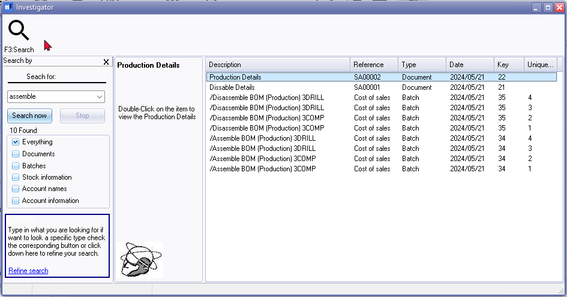

Known issues - Search - BOM (Production)
Search (Central search) Description Inaccuracies
To locate specific assemble or disassemble transactions or document numbers:
- Search for keywords such as "assemble", "disassemble", or document numbers starting with "SA".
- In the search results, double-click on the "Batch" type to display the transactions in the T-Account viewer.
- To print a document, double-click on a document for the "Document" type.

NOTE: On the Search (central search), the "Description" column for the "Document" type, is indicated as follows:
- Dissable Details - Should be "Production Details" since the document e.g. "SA00001" is created using the "Assemble" option. The document type is listed as "Assemble" on the Document groups and Transactions tabs of the stock item for the BOM (Production) stock item type.
- Production Details - Should be "Disassemble Details" since the document e.g. "SA00002" is created using the "Disassemble" option. The document type is listed as "Disassemble" on the Document groups and Transactions tabs of the stock item for the BOM (Production) stock item type.
Search Description Inaccuracy:
- Central Search shows "Dissable Details" for "Assemble" documents (e.g., "SA00001"). This should be "Production Details".
- Conversely, "Production Details" are shown for "Disassemble" documents (e.g., "SA00002"). This should be "Disassemble Details".
Correct Descriptions:
- "Assemble" documents: Use "Production Details".
- "Disassemble" documents: Use "Disassemble Details".
These descriptions are consistent with the document types listed on the stock item's "Document groups" and "Transactions" tabs (BOM (Production) stock item type).
Document type descriptions is correct
BOM (Production) Document groups / Transactions tabs
The "Assemble" and "Disassemble" functions for BOM (Production) items create posted documents. These transactions will be listed under the Document groups tab and the Transactions tab.
Documents generated by these functions will have a document prefix "SA" (e.g., "SA00001"), using a similar 7-digit format.
BOM (Production) Document Groups Tab
The Document Groups tab for BOM (Production) stock items shows documents related to assembly and disassembly. These documents are automatically posted when you perform the Assemble and Disassemble actions.

On the Document groups tab, you can:
- Print a document: Double-click on the document to print it.
- Open a posted document: Right-click on the document and select "Open document" from the context menu.
BOM (Production) Transactions Tab
The Transactions tab includes posted documents generated by the assembly and disassembly of BOM (Production) items.

On the Transactions tab, you can:
- Open a posted document: Right-click on the document and select "Open document" from the context menu.
By following these instructions, you can efficiently manage and review the documents and transactions related to the assembly and disassembly of BOM (Production) items.
Viewing Posted Documents for BOM (Production) Items
Opening a Posted document
On the BOM (Production) Document groups and Transactions tabs, you can open posted documents generated by the "Assemble" and "Disassemble" functions as follows:
- Right-click on the desired document.
- Select "Open document" from the context menu.

Identifying the Document type
- The "Your reference" field and the "Description" column in the posted document will indicate whether the document was generated using the "Assemble" or "Disassemble" options for BOM (Production) items.
- Documents generated by these functions will have a document prefix "SA" (e.g., "SA00001"), using a similar 7-digit format.
By using these steps, you can easily access and identify the specific documents related to the assembly and disassembly of BOM (Production) items.
Print a Posted document
You may print selected posted document generated by the "Assemble" and "Disassemble" of BOM (Production) items from the following options:
- BOM (Production) - Document groups tab : (Double-click to print).
- Search (central search) : Locate these posted document generated by the "Assemble" and "Disassemble" of BOM (Production) items. (Double-click to print).

The "POS Tax Invoice" will print the correct document number, but will print the system date and time stamp of your operating system and not the actual transaction date.
|
|
The default document layout file which will be used to print documents generated by the "Assemble" and "Disassemble" of BOM (Production) items, is the "Layout file point-of-sale" selected in Setup → Documents setup. WARNING: Point-of-sale document layouts might not be ideal for printing "Assemble" and "Disassemble" documents for BOM (Production) item types due to:
Recommendation: Select a different document layout file for BOM (Production) transactions (Setup → Documents setup).
NOTE: Selecting the document layout files, which supports the "TYPES.SDESCRIPTION" document name from the "TYPES" table, will print the document name as "Delivery note" for "Assemble" option and "Remittance" for "Disassemble" option. Selecting the following document layout files, will replicate the document names:
Recommendation: You may select the BOM (Production) Layout file (TRN_3266) for the Stock item type to print layout files generated during "Assembly" or "Disassembly". Document prefix: "SA" (e.g., "SA00001"), with a similar 7-digit format. Example : Assemble
Delivery note accepted: in SubReport-1(TAX) - Changed label TRpExpression85 to print BOM (Production accepted :) CUSTOM('GETTEXTLANG',3266,'BOM(Production',CLIENTORDEFLANG.SLANGUAGE,0,0)+' '+(CUSTOM('GETTEXTLANG',906275,'Accepted',CLIENTORDEFLANG.SLANGUAGE,0,0)+(': '))
Example : Disassemble
Remittance accepted: in SubReport-1(TAX) - Changed label TRpExpression85 to print BOM (Production accepted :) CUSTOM('GETTEXTLANG',3266,'BOM(Production',CLIENTORDEFLANG.SLANGUAGE,0,0)+' '+(CUSTOM('GETTEXTLANG',906275,'Accepted',CLIENTORDEFLANG.SLANGUAGE,0,0)+(': '))
|


Viewing BOM (Production) Transactions
The transactions generated by assembling and disassembling BOM (Production) items are posted to the "BOM (Production) Contra account" as configured in Setup → Stock Information.
These transactions are recorded in the ledger and can be viewed through various reports and tools. Here’s how you can view, print, and export these transactions:
- Reports Menu: To view these transactions, navigate to the Reports menu and select Reports → Ledger → Transactions. You can choose from the following reports:
- Transactions
- Transactions - Standard
- Transactions - Extra details
- Batch entry: Cost of Sales journal: Open the Batch entry (F2) and select Cost of Sales journal. In the Cost of Sales journal, click on the posted batches tab and select the batch. You can print the transactions in the "Batch type report - Posted batch".
- T-Account Viewer: Access the T-Account viewer and select the "BOM (Production) Contra account". This allows you to view, print, and export the transactions.
- Ledger Analyser: Alternatively, you can print a Trial Balance in Ledger Analyser 1 or Ledger Analyser 2. Double-click on the desired account or use the "Show details" option from the context menu to view detailed transactions.
- Central Search: To locate specific assemble or disassemble transactions or document numbers. In the search results, double-click on the Batch type to display the transactions in the T-Account viewer.
Example : Ledger transactions - BOM (Production) Contra account

|
|
BOM (Production) - Assemble and Disassemble options will automatically generate transactions, which is posted to the ledger. The Document no. for a BOM (Production) - Assemble and Disassemble options is automatically generated as a seven-digit number (consisting of a prefix SA followed by 5 numerical digits). The Document type is "Assemble" or "Disassemble" |
Example : Batch type report - Posted batch - BOM (Production) Batch transactions
Open the Batch entry (F2) and select Cost of Sales journal. In the Cost of Sales journal, click on the posted batches tab and select the batch.

Click the Print button to print the transactions in the "Batch type report - Posted batch".

Example : Batch type report - Posted batch report - Assemble transactions

Example : Batch type report - Posted batch report - Disassemble transactions

T-Account viewer
In addition to the transaction reports on the Reports menu; you may view, print and export transactions in the T-Account viewer from the following options.
- T- Account viewer : On the reports menu, select the T-Account viewer icon and select the "BOM (Production) Contra account".
- Alternatively, you may print a Trial balance in the Ledger analyser 1 / Ledger analyser 2 and double-click or use the "Show details" option on the context menu.

You may filter the transactions by batch number, e,g, "34" or "35".
Click on the Print button to print a T-account view of the transactions.

Should you wish to export these transactions to a spreadsheet click Export. If you need to include Contra accounts, in your spreadsheet, select the "Show contra" option